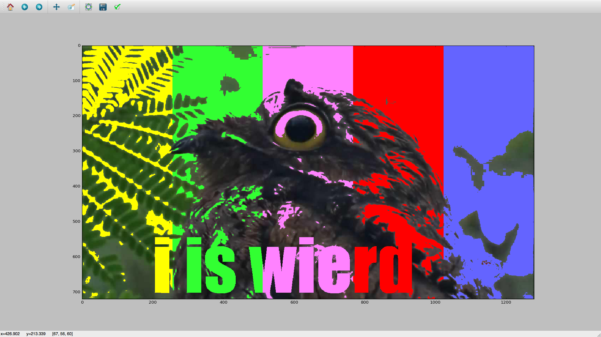

This program for Python yields an image that has Television testing colors, and says I is WIERD, because the resulting image is always a bit,WIERD.
import matplotlib.pyplot as plt
import os.path
import numpy as np # “as” lets us use standard abbreviations
from PIL import Image
from PIL import ImageFont
from PIL import ImageDraw
img = Image.open("imagename.jpeg")
draw = ImageDraw.Draw(img)
# font = ImageFont.truetype(
font = ImageFont.truetype("impactreg (1).ttf", 200)
# draw.text((x, y),"Sample Text",(r,g,b))
draw.text((200, 500),"i is wierd",(255,255,255),font=font)
img.save("imagename.jpeg")
'''Read the image data'''
# Get the directory of this python script
directory = os.path.dirname(os.path.abspath(__file__))
# Build an absolute filename from directory + filename
filename = os.path.join(directory, "imagename.jpeg")
# Read the image data into an array
img = plt.imread(filename)
'''Show the image data'''
# Create figure with 1 subplot
fig, ax = plt.subplots(1, 1)
# Show the image data in a subplot
ax.imshow(img, interpolation='none')
# Show the figure on the screen
height = len(img)
width = len(img)
for r in range(720):
for c in range(256):
if sum(img[r][c])>250: # brightness R+G+B goes up to 3*255=765
img[r][c]=[255,255,0] # R + B = magenta
height = len(img)
width = len(img)
for r in range(720):
for c in range(256,512):
if sum(img[r][c])>250: # brightness R+G+B goes up to 3*255=765
img[r][c]=[50,255,50] # R + B = magenta
height = len(img)
width = len(img)
for r in range(720):
for c in range(512,768):
if sum(img[r][c])>250: # brightness R+G+B goes up to 3*255=765
img[r][c]=[255,130,255] # R + B = magenta
height = len(img)
width = len(img)
for r in range(720):
for c in range(768,1024):
if sum(img[r][c])>250: # brightness R+G+B goes up to 3*255=765
img[r][c]=[255,0,0] # R + B = magenta
height = len(img)
width = len(img)
for r in range(720):
for c in range(1024,1280):
if sum(img[r][c])>250: # brightness R+G+B goes up to 3*255=765
img[r][c]=[100,100,255] # R + B = magenta
The outcome of the code should look like this:
